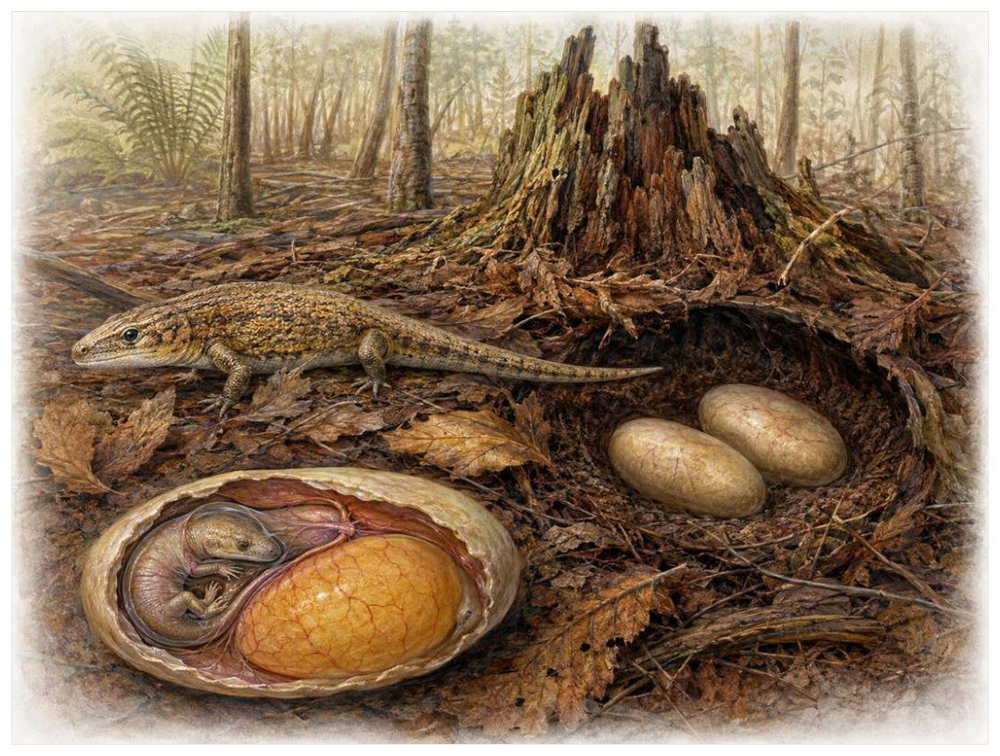
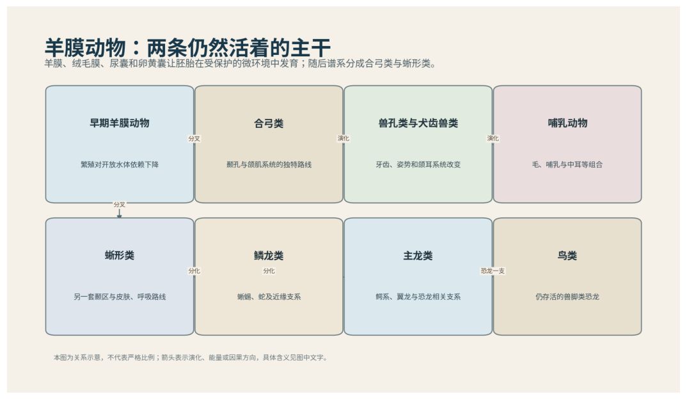

第08篇 · 石炭纪：巨型森林、节肢动物与羊膜动物 · 第 28 章
羊膜卵革命：把一池水带进胚胎内部
本篇主题:石炭纪：巨型森林、节肢动物与羊膜动物
煤沼森林改变大气与河流，陆地脊椎动物摆脱对水中繁殖的依赖。

本章科学复原配图 （用于呈现结构与生态关系, 不替代化石照片、测量数据与系统发育证据。）
这一章进入晚石炭世起，约3.2亿年前之后。没有任何生物预知下一时代，所有性状都只能在当时的资源、天敌和繁殖条件下接受筛选。羊膜卵不是简单的硬壳鸡蛋，而是一套胚外膜系统。羊膜包围胚胎并保持液体环境，绒毛膜参与气体交换，尿囊储存含氮废物并协助呼吸，卵黄囊提供营养。早期羊膜动物的卵可能柔软且埋在湿土中，但它们已经把胚胎发育所需的‘小池塘’封装在体内或卵中，从而减少对开放水体的依赖。
进入这个时代
生态系统的真实声音不是巨兽咆哮，而是持续的摄食、分解、搬运和繁殖。每一具尸体、每一层落叶和每一次沉积扰动都会重新分配资源。在远离池塘的林地，产卵地点第一次可以藏在潮湿落叶、土穴或腐木内。胚胎不再以有鳃幼体游入水中，而在保护膜内完成更多发育后孵化。这个改变没有让所有羊膜动物立即征服沙漠，却扩大了繁殖地点和季节选择。
在“羊膜卵革命：把一池水带进胚胎内部”所覆盖的时间里，不能把地理与气候当作固定背景。海陆位置、海平面、河流或植被结构会改变资源可达性，同一性状在不同地区可能得到完全相反的选择结果。
以羊膜卵革命：把一池水带进胚胎内部为例，身体结构总有材料和发育成本。硬壳提高防护却使生长和运动更昂贵，长颈扩大取食范围却增加支撑与供血问题，高代谢提高持续活动也提高食物需求。所谓成功设计从来是特定环境中的权衡。在本章中，这一约束具体落在“胚外膜控制水分、气体和废物，提高陆地胚胎存活”这条关系上。
再从晚石炭世起，约3.2亿年前之后的时间尺度看，化石记录偏爱硬组织、快速埋藏和容易出露的岩层。一次“首次出现”通常只是目前所知的最早记录，一次“突然消失”也需要排除保存窗口关闭。年代、形态和环境证据必须一起解释。 它与“羊膜、绒毛膜与尿囊”共同决定了后续变化可以沿哪些路径发生。

图 28-1 羊膜动物分成合弓类与蜥形类两条主干。
生态系统如何运转
理解“胚外膜控制水分、气体和废物，提高陆地胚胎存活”需要区分个体事件与长期压力。偶然一次捕食只改变个体命运，持续数千代的稳定关系才可能推动牙齿、外壳、感觉器官或生活史发生方向性变化。
围绕“胚外膜控制水分、气体和废物，提高陆地胚胎存活”，这种关系没有永恒赢家。收益随密度和环境改变：防御越常见，攻击专门化的价值越高；资源越稀少，维持昂贵结构的代价越大。化石记录中的扩张与衰退，常是这种动态平衡被外部事件打破的结果。 对羊膜卵革命：把一池水带进胚胎内部而言，这一后果还会与“体内受精避免精子必须在开放水中游动”相互放大或抵消。
“体内受精避免精子必须在开放水中游动”还会改变可利用空间。一个支系若能进入新的水深、植被高度或沉积层，竞争会暂时减弱；随后追随者、捕食者和寄生者又会把新空间变成新的互动网络。
围绕“体内受精避免精子必须在开放水中游动”，它的长期后果通常通过幼体和繁殖体现。成年个体即使能抵抗一次危机，只要巢址、配子、幼体食物或成长季节被破坏，种群仍会在数代内下降。 对羊膜卵革命：把一池水带进胚胎内部而言，这一后果还会与“更直接的发育减少水生幼体阶段但提高单枚卵投入”相互放大或抵消。
把“更直接的发育减少水生幼体阶段但提高单枚卵投入”放进食物网，可以看到它不是孤立行为。它会影响种群密度、栖息地使用和尸体进入分解链的速度，并把后果传给并未直接参与互动的物种。
围绕“更直接的发育减少水生幼体阶段但提高单枚卵投入”，还要考虑空间异质性。一项在浅海、河谷或林冠有效的策略，移到深水、干旱内陆或开阔地便可能失去优势。因此同一支系常出现区域性扩张，而不是全球同步取代。 对羊膜卵革命：把一池水带进胚胎内部而言，这一后果还会与“胚外膜控制水分、气体和废物，提高陆地胚胎存活”相互放大或抵消。
关键演化创新
在“羊膜卵革命：把一池水带进胚胎内部”中，围绕“羊膜、绒毛膜与尿囊”，这一结构的历史应按性状拆开。支撑、感觉、供能和控制往往不是同时成熟，化石会显示镶嵌状态：某一部分已接近后来的形态，其他部分仍保留祖征。 它首先需要在晚石炭世起，约3.2亿年前之后的生态条件下产生可测量收益。
就“羊膜、绒毛膜与尿囊”而言，化石能较可靠地记录硬组织形态，却很少直接保留基因调控与短时行为。因此结构出现通常可信，最初用途和选择路径则应按证据标为主流解释或合理推测。 本章把它与“体内受精”并列，是为了显示复杂性状往往依赖多部分协同。
在“羊膜卵革命：把一池水带进胚胎内部”中，围绕“体内受精”，“体内受精”是本章的重要演化创新。创新并不等于某一代突然长出完整器官，它通常由旧结构的尺寸、连接、材料和表达时序逐步变化，并在每个中间阶段承担可用功能。 它首先需要在晚石炭世起，约3.2亿年前之后的生态条件下产生可测量收益。
就“体内受精”而言，其宏观影响往往滞后于结构起源。一个创新可以先在小型、稀少支系中存在数百万年，直到环境变化或竞争者灭绝后才迅速扩张；“出现”和“成为主导”是两个不同事件。 本章把它与“角质化皮肤与肋骨呼吸”并列，是为了显示复杂性状往往依赖多部分协同。
在“羊膜卵革命：把一池水带进胚胎内部”中，围绕“角质化皮肤与肋骨呼吸”，这一结构的历史应按性状拆开。支撑、感觉、供能和控制往往不是同时成熟，化石会显示镶嵌状态：某一部分已接近后来的形态，其他部分仍保留祖征。 它首先需要在晚石炭世起，约3.2亿年前之后的生态条件下产生可测量收益。
就“角质化皮肤与肋骨呼吸”而言，这也提醒我们不要寻找单一关键基因。复杂性状由多个组织和调控网络协调，改变任何一环都可能产生不同结果，演化路径因此呈树状而非直线。 本章把它与“羊膜、绒毛膜与尿囊”并列，是为了显示复杂性状往往依赖多部分协同。
生命群像：把物种放回生态网络
古窗龙（Paleothyris acadiana）
认识古窗龙（Paleothyris acadiana）要先放弃静态骨架印象。它生活在晚石炭世，约约30厘米，日常任务是作为森林地表小型食虫或肉食动物维持能量与繁殖。轻巧头骨和四肢展示早期蜥形类近亲的陆地适应只是这一整套生活史中最容易化石化的部分。
对古窗龙而言，这种生活方式还会反向塑造环境。摄食改变植物或猎物结构，足迹和掘穴改变沉积，尸体和排泄物把营养集中到局部。生态位不是它进入的固定房间，而是它与其他生物共同建造并持续修改的关系网络。 这使“轻巧头骨和四肢展示早期蜥形类近亲的陆地适应”不能脱离其森林地表小型食虫或肉食动物角色来理解。
我们之所以能够作出上述判断，主要因为系统位置接近早期爬行动物，但不等于现代爬行动物直接祖先。单一结构通常有多种功能解释，所以还要查看磨损、病理、肌肉附着、沉积环境和近缘比较。计算模型能排除不可能姿势，却不能自动恢复没有保存的软组织。
由古窗龙这个案例看，面对仍有争议的细节，负责任的复原不是停止讲述，而是标注证据等级。形态、年代和亲缘可较确定，具体姿势、叫声、求偶和群猎则按材料降级；新标本会在这些边界内继续改写认识。 它在晚石炭世留下的记录，因此同时是第28章所讨论的形态史和生态史的一部分。
油页岩蜥（Petrolacosaurus kansensis）
油页岩蜥（Petrolacosaurus kansensis）生活在晚石炭世，约3.02亿年前，已知体型约为约40厘米。它在群落中的角色可概括为小型陆生食虫动物。最值得观察的结构是头骨两对颞孔是早期双孔类标志，为后续多数蜥形类奠定咬肌空间。这些结构不是为了后来时代而准备，而是在当时直接影响摄食、运动、防御或繁殖。
对油页岩蜥而言，相似环境可能让远亲出现相近轮廓，但内部结构会保留祖先限制。比较它与现代类比时，应只借用可检验的功能，不把现代动物的行为、社会制度或代谢水平整套复制到古生物身上。 这使“头骨两对颞孔是早期双孔类标志，为后续多数蜥形类奠定咬肌空间”不能脱离其小型陆生食虫动物角色来理解。
其复原依赖完整骨架支持双孔型头骨，具体软组织和繁殖方式依系统发育推断。年代和保存形态通常属于较强证据，体重、速度、颜色和社会行为则需要额外假设。书中把这些层次拆开，是为了让读者知道哪些可视为事实，哪些仍应等待更多材料。
由油页岩蜥这个案例看，它不是祖先链条上必须跨过的一格。演化树中同时存在许多近缘支系，只有少数留下后代；旁支化石同样关键，因为它们显示某组性状出现的顺序和可行范围。 它在晚石炭世，约3.02亿年前留下的记录，因此同时是第28章所讨论的形态史和生态史的一部分。
始祖单弓兽（Archaeothyris florensis）
在这一章的生命群像里，始祖单弓兽（Archaeothyrisflorensis）不能只当作图鉴名称。它出现于晚石炭世，约3.06亿年前，体型大约约50厘米，主要生活方式是陆地小型捕食者；单一颞孔扩大颌肌附着，是早期合弓类代表则说明身体怎样围绕这一生活方式进行组合。
对始祖单弓兽而言，它既可能是捕食者、植食者或工程者，也同时是其他生物的猎物、竞争者和分解资源。一次取食只是一瞬，长期生态影响来自成千上万个体反复搬运营养、改变植被或扰动沉积物。体型越大，这种工程效应通常越明显，但恢复速度也常越慢。 这使“单一颞孔扩大颌肌附着，是早期合弓类代表”不能脱离其陆地小型捕食者角色来理解。
科学家并未直接看见它生活，依据是新斯科舍树桩群骨骼支持其合弓类身份，生活习性由牙齿和肢体推断。现代类比可以帮助提出可检验模型，却不能取代化石；越具体的短时行为，越需要痕迹、内容物或重复病理等直接线索。
由始祖单弓兽这个案例看，这个案例还提醒我们，亲缘和生态角色是两件事。近亲可以因资源分化而外形迥异，远亲也能因相似压力而趋同。把它放在演化树和食物网两个坐标中，才不会误写成线性进步。它在晚石炭世，约3.06亿年前留下的记录，因此同时是第28章所讨论的形态史和生态史的一部分。
卡色龙类早期成员（Eocasea martini）
从外形看，卡色龙类早期成员（Eocasea martini）最容易被记住的是接近后来大型植食卡色龙类基部，显示植食性由小型肉食祖先演化。它生活在晚石炭世，大小约约20厘米，承担小型食虫或杂食合弓类这一生态功能。把年代、体型和功能放在一起，才能避免把奇特形态当成无意义装饰。
对卡色龙类早期成员而言，成年体型往往主导复原，但幼体可能使用完全不同的食物和栖息地。若成长阶段跨越多个生态位，种群就同时依赖多套环境；其中任一环节中断都可能导致长期衰退。化石骨床的年龄结构因此比单具最大标本更能说明生态。 这使“接近后来大型植食卡色龙类基部，显示植食性由小型肉食祖先演化”不能脱离其小型食虫或杂食合弓类角色来理解。
证据核心是牙齿与肋骨形态支持食性转变序列，但胃肠软组织未保存。化石记录更擅长回答“结构是什么”，较难回答“每天怎样行动”。足迹、胃内容物、咬痕或胚胎若存在，会显著缩小推测范围；若只有零散骨骼，行为叙述就必须更克制。
由卡色龙类早期成员这个案例看，它所代表的身体方案后来可能消失，也可能被远亲以不同材料重新发明。生命史因此既有可重复的功能解，也有不可复制的谱系路径。两者结合，才解释现代生物为何既熟悉又偶然。 它在晚石炭世留下的记录，因此同时是第28章所讨论的形态史和生态史的一部分。
现代龟胚胎（Testudines embryology）
现代龟胚胎（Testudines embryology）是现生类比的一名真实生态成员，而不是通往后代的抽象过渡。它约有卵内毫米至厘米级，以羊膜动物胚胎发育模型的方式获取资源；羊膜、尿囊和绒毛膜清楚展示羊膜卵不是单纯外壳反映了其祖先历史与局部选择压力共同留下的结果。
对现代龟胚胎而言，这种生活方式还会反向塑造环境。摄食改变植物或猎物结构，足迹和掘穴改变沉积，尸体和排泄物把营养集中到局部。生态位不是它进入的固定房间，而是它与其他生物共同建造并持续修改的关系网络。 这使“羊膜、尿囊和绒毛膜清楚展示羊膜卵不是单纯外壳”不能脱离其羊膜动物胚胎发育模型角色来理解。
判断它的生活方式时，研究者首先使用现代发育揭示同源结构，不能直接还原最早羊膜动物蛋壳硬度和筑巢行为。随后会检验替代解释：同样的牙是否也能处理其他食物，同样的骨骼比例是否由年龄造成，同一骨层是否来自群体生活还是灾难性聚集。排除过程比贴标签更重要。
由现代龟胚胎这个案例看，过去的复原常受完整现代动物模板影响，新材料则迫使研究者接受更陌生的身体比例或生活方式。最稳妥的表达是保留估计区间，并明确哪些软组织、颜色和社会行为仍属合理推测。 它在现生类比留下的记录，因此同时是第28章所讨论的形态史和生态史的一部分。
因果链：环境、生态与性状
把“羊膜、绒毛膜与尿囊”拆成成本与收益，可以避免把演化创新写成无条件升级。它可能扩大摄食、运动或繁殖的边界，却要付出组织材料、发育协调和日常维持的代价；“体内受精”又会改变这笔账在不同生命阶段的分配。对古窗龙而言，轻巧头骨和四肢展示早期蜥形类近亲的陆地适应在成年阶段或许十分醒目，但种群能否延续仍取决于幼体是否能找到食物、是否有安全的生长场所以及环境波动后是否保留繁殖者。化石往往偏爱成年硬组织，因此书写晚石炭世起，约3.2亿年前之后时必须主动补上这些不易保存却决定长期命运的环节。
从时间顺序看，“羊膜、绒毛膜与尿囊”的最早记录不等于它立即改写生态系统。结构可能先以小幅变异出现在稀少支系中，经历很长的试验期，直到“胚外膜控制水分、气体和废物，提高陆地胚胎存活”所代表的资源条件或竞争格局改变，才出现可见的辐射。反过来，一个支系在化石记录中突然繁盛，也不证明关键结构刚刚产生；保存窗口打开、地理扩散或生态位释放都能造成类似图景。因此讨论晚石炭世起，约3.2亿年前之后的创新时，本章把“首次出现”“功能完善”“多样化”和“成为生态主导”分成四个问题，避免用一个日期替代整段历史。
在晚石炭世起，约3.2亿年前之后，身体不是若干部件的简单相加。“羊膜、绒毛膜与尿囊”只有与“角质化皮肤与肋骨呼吸”在供能、控制和发育上兼容，才可能稳定遗传；局部性能提高若超过呼吸、循环或支撑能力，整体反而失效。始祖单弓兽的单一颞孔扩大颌肌附着，是早期合弓类代表因此应放进完整身体比例中解释，而不是把某一器官单独夸大。生物力学模型可以估算受力和运动范围，组织学能限制生长速度，近缘比较能提示同源关系；三者相互校验，才有可能从静态化石走向一个能够活着完成日常活动的动物或植物。
种群层面的成功还要考虑波动，而不仅是平均状态。在资源丰富年份，“体内受精”带来的高性能可能迅速增加个体数；在低谷年份，维持该结构的成本又会放大死亡。若油页岩蜥拥有较广食谱或可迁移，便可能跨过低谷；若其头骨两对颞孔是早期双孔类标志，为后续多数蜥形类奠定咬肌空间高度依赖单一环境，恢复就更困难。化石群落中的丰度峰值、体型变化和地理收缩能为这种“繁荣—压力—恢复”循环提供线索，但必须与采样偏差区分。对晚石炭世起，约3.2亿年前之后的任何稳态描述，都只是长期波动中被岩层保存的一小段。
本章的因果链最终落在繁殖上。“体内受精避免精子必须在开放水中游动”改变个体获得资源和避开风险的方式，“羊膜、绒毛膜与尿囊”改变身体能做什么，但只有这些差异持续影响配子、胚胎、幼体和成体留下后代的概率，演化频率才会跨世代变化。古窗龙和油页岩蜥的化石常让人关注尺寸或武器，然而巢、蛋、芽孢、孢粉、幼体壳和成长线往往更接近选择真正发生的位置。理解羊膜卵革命：把一池水带进胚胎内部，因此要把最壮观的成年结构重新接回完整生活史。
时代横截面：个体、种群与证据
证据强度也应逐句区分。现生爬行动物、鸟和哺乳动物胚胎学建立膜的同源关系若直接记录形态或行为痕迹，可把某些可能性排除；早期羊膜动物骨骼和足迹显示陆地活动若来自模型或现代类比，则通常提供范围而非唯一答案。对始祖单弓兽的单一颞孔扩大颌肌附着，是早期合弓类代表，我们也许能高可信地描述结构，却只能以主流解释讨论功能，以合理推测讨论日常行为。把层级写出来不会削弱故事，反而让读者知道未来新发现最可能改动哪一部分。
把结构看作模块，可以解释为什么过渡类型常显得“新旧并存”。古窗龙的轻巧头骨和四肢展示早期蜥形类近亲的陆地适应可能已经接近后来状态，而呼吸、繁殖或运动的其他部分仍保留祖征；油页岩蜥可能采用另一种组合达到相似功能。演化不要求所有部件同步改变，只要求每个阶段的完整个体能够生活和繁殖。正因如此，真实谱系会产生旁支、回退和多次独立试验，而不是教科书式直梯。
再把始祖单弓兽加入横截面，群落关系会从两者比较变成网络。它作为陆地小型捕食者，通过单一颞孔扩大颌肌附着，是早期合弓类代表连接资源与其他消费者；其数量变化可能同时影响古窗龙和油页岩蜥，甚至改变分解链和营养循环。这样的间接效应很少能由一具骨架直接证明，却可以从物种共现、丰度、痕迹化石和环境指标中受到约束。羊膜卵革命：把一池水带进胚胎内部的生态复原因此需要群落数据，而不只是著名标本的精细解剖。
地理同样会拆散看似整齐的时代标签。晚石炭世起，约3.2亿年前之后并不是全球同时拥有同一种气候与群落：海盆深浅、纬度、山脉、河流和大陆隔离会让古窗龙、油页岩蜥与始祖单弓兽的分布错开。一个支系可能在某地区衰退、在另一地区成为避难所；后来扩散又会造成化石记录中的“重新出现”。因此本章的代表物种用于说明机制，而不意味着它们都在同一地点同一时刻相遇。
“谁取代了谁”常把复杂过程压成单线叙事。在羊膜卵革命：把一池水带进胚胎内部中，即使油页岩蜥在某层位后减少、始祖单弓兽随后增加，也可能是二者分别响应气候或栖息地，而不是直接竞争导致淘汰。需要检查时间误差、地理重叠和资源相似度；只有三者都支持，替代关系才更可信。更多时候，生态系统通过功能重新组合过渡，旧支系与新支系会长期并存。
科学家为什么这样判断
“现生爬行动物、鸟和哺乳动物胚胎学建立膜的同源关系”还需要与年代学绑定。只有事件先后关系可靠，才能讨论因果；若环境变化和生物响应的误差范围大量重叠，就应表述为相关或可能机制，而不是宣布已经证明。
“早期羊膜动物骨骼和足迹显示陆地活动”最有价值的地方，是它能排除某些流行复原。关节不允许的姿势、承重无法支持的速度、与沉积环境冲突的生活方式，都可以被证据淘汰；剩余模型仍可能不止一个。
“蛋壳化石较晚出现，说明最初形态需从系统发育推断”提供的是一类约束而非完整录像。它可能精确记录某一瞬间，却未必代表全年或整个物种；也可能反映长期平均，却无法指出单次行为。把不同时间尺度的证据组合，才能重建生态过程。
在“羊膜卵革命：把一池水带进胚胎内部”这一问题上，把上述方法合在一起，研究者才能从残缺材料走向受约束的复原。任何一条证据都可能受到成岩、污染、样本量或现代类比的限制；结论越具体，越需要多条独立证据指向同一方向，并与晚石炭世起，约3.2亿年前之后的地层背景相容。
过去的图景与今天的证据
羊膜卵本身很少在最早阶段保存，因此起源时间主要由已分化的合弓类与蜥形类化石下限推断。胎生并非羊膜卵的反面：哺乳动物仍保留羊膜等胚外膜，只是大多数把发育转移到母体内部。多条爬行动物支系也独立演化胎生。
围绕“羊膜卵革命：把一池水带进胚胎内部”，旧复原并不总是彻底错误。它可能正确抓住亲缘或基本功能，却在姿势、比例和生态上被新标本修订。比较“过去认为”和“现在更支持”，能看见证据如何逐层替换想象。
对晚石炭世起，约3.2亿年前之后的材料而言，这里的争论并非一方相信科学、另一方拒绝科学，而是不同材料对模型的约束力度不同。旧结论可能建立在少量标本或错误现代类比上，新技术增加性状后会改变最合理解释。修正是研究正常运行的结果。
跨尺度观察
灭绝选择性：危机不会随机删除名单。分布狭窄、食性单一、体型大、成熟慢或依赖特定栖息地的支系往往风险更高，但每次事件的杀伤机制不同，规律只能作为概率而非绝对法则。 在“羊膜卵革命：把一池水带进胚胎内部”中，这一尺度具体连接了“胚外膜控制水分、气体和废物，提高陆地胚胎存活”与“羊膜、绒毛膜与尿囊”，因而不能只从单个成年标本判断。
恢复不是复原：大灭绝后的多样性回升并不意味着旧生态返回。幸存者会以新组合接管功能，某些空缺可能数百万年无人填补，另一些由远亲迅速占据。恢复速度应分别看物种数、身体大小和食物网复杂度。 在“羊膜卵革命：把一池水带进胚胎内部”中，这一尺度具体连接了“体内受精避免精子必须在开放水中游动”与“体内受精”，因而不能只从单个成年标本判断。
空间镶嵌：同一地质时期包含多个大陆、纬度和海盆。地区之间可因山脉、海峡和洋流形成不同群落，局部化石库不能代表全球平均。比较多个地点能区分真正的全球事件与区域替换。 在“羊膜卵革命：把一池水带进胚胎内部”中，这一尺度具体连接了“更直接的发育减少水生幼体阶段但提高单枚卵投入”与“角质化皮肤与肋骨呼吸”，因而不能只从单个成年标本判断。
通向下一个时代
从本章走向下一阶段时，需要保留的不是一串物种名，而是一个因果链：环境改变可用能量与栖息地，生态关系筛选性状，性状又反过来改造环境。羊膜动物很快分成合弓类与蜥形类两大主线。前者将通向兽孔类和哺乳动物，后者包含龟、鳞龙、鳄、恐龙与鸟。二叠纪的陆地世界因此远比‘爬行动物时代前奏’丰富。
本章精选来源
- [R46] Cleal, C. J. & Thomas, B. A. Palaeozoic tropical rainforests and their effect on global climates. Geobiology 3, 13-31 (2005).
- [R47] Harrison, J. F., Kaiser, A. & VandenBrooks, J. M. Atmospheric oxygen level and the evolution of insect body size. Proceedings of the Royal Society B 277, 1937-1946 (2010).
- [R48] Benton, M. J. Vertebrate Palaeontology, 4th ed. Wiley Blackwell, 2015.
- [R49] Reisz, R. R. Origin of dental occlusion in tetrapods: signal for terrestrial vertebrate evolution? Journal of Experimental Zoology B 306B, 261-277 (2006).